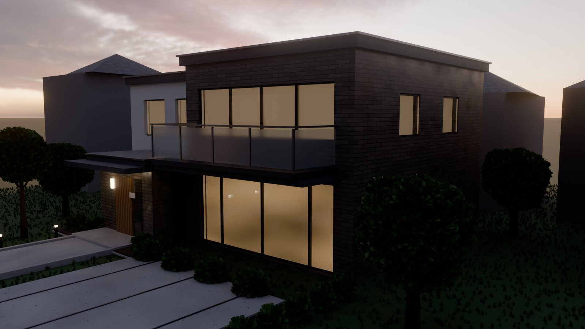
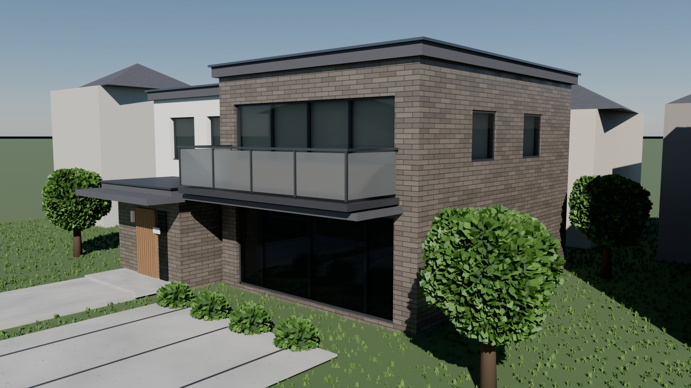
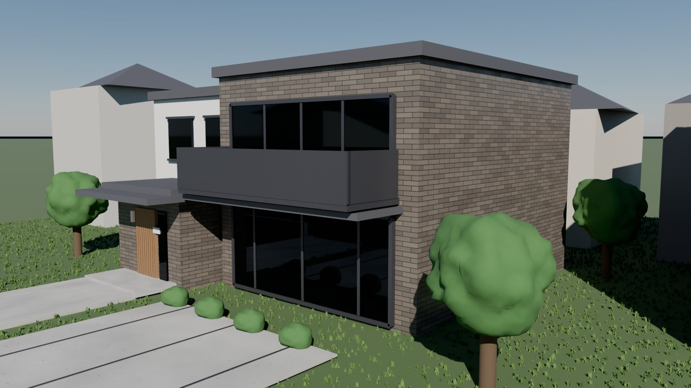
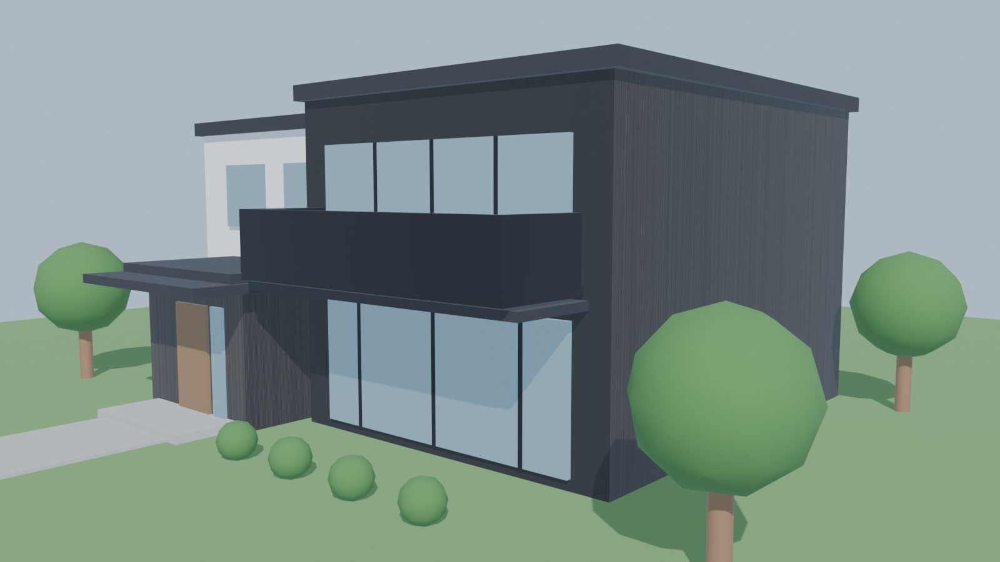
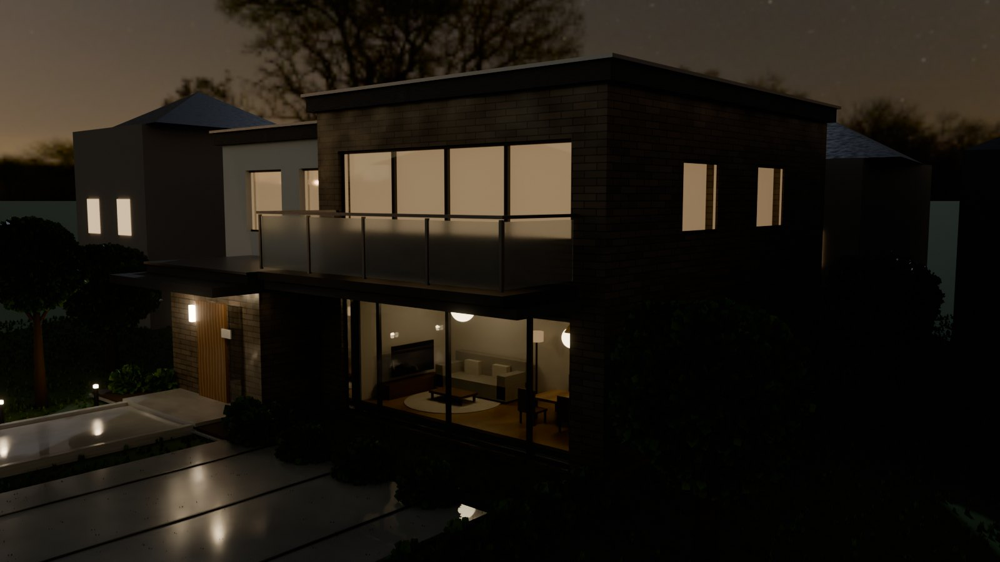
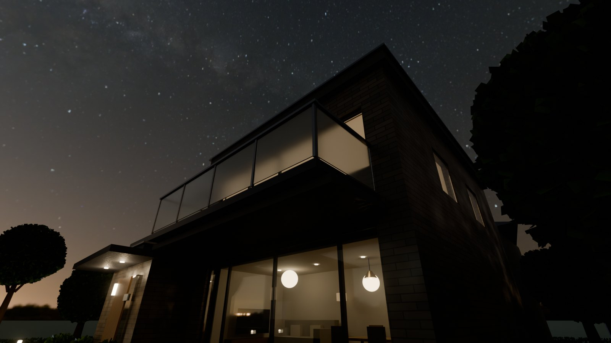

実在モデルハウスを参考にした3Dモデリング検証
— パナソニック ホームズ「カサート プレミアム」風
プロンプトの流れ
PROMPT 1 — 調査＆モデリング
パナソニックホームズのモデルハウスで一番有名なモデルハウスを調べてBlenderでモデリングして
PROMPT 2 — フォトリアル化
ビエナでブラッシュアップしたようにもっとフォトリアルにブラッシュアップして
PROMPT 3 — 要素別ディテールアップ
バルコニー、ガラス、屋根、壁、樹木などをもっとリアルな表現にして
PROMPT 4 — 環境ライティング
下記あたりをさらにブラッシュアップして ・空をHDRIに変更 ・夕景ライティング ・玄関まわりの植栽追加 ・内観ライトの点灯表現
PROMPT 5 — 夜景・室内・路面・アングル
下記も修正して 完全な夜景バージョン、窓越しに見える家具の配置、雨上がりの濡れた路面表現、広角の見上げアングル追加
※ Web検索でパナソニック ホームズの最上位商品「カサート プレミアム」（キラテック光触媒タイル外壁・フラットルーフ・大開口）を特定し、その特徴をもとにモデリング。 「ビエナ」は過去セッションの検証を指しており、AIが過去セッションの transcript を検索してブラッシュアップ手法（パーティクル芝・背景の隣家・DoF・グレア等）を自力で再確認してから作業に入った点もポイント。
結果（レンダリング）




再現した カサート プレミアム の特徴
- キラテック（光触媒タイル）外壁 — ブリックテクスチャ＋バンプで小口タイルの目地まで表現。UVキューブ投影で側面の縞崩れを解消
- フラットルーフの箱型コンポジション — タイル棟＋白壁棟の2ボリューム構成、パラペットにアルミ笠木
- 大開口 — 1階リビング全面ガラス＋2階横連窓。ブーリアンで壁を掘り込み、奥行きのあるリベートと影を再現
- ガラス手すりバルコニー — すりガラスパネル＋アルミ支柱＋ハンドレール
- 深い庇と玄関キャノピー — 木目の玄関ドア、玄関灯、表札、ドアマット
- 外構 — 目地入り駐車場、縁石付きアプローチ、境界壁＋看板、前面道路
アップデート（2026-07-17）— 完全夜景・室内家具・濡れた路面・広角アングル
夕景版をベースに、星空の完全夜景へ移行。1階リビングを実際に掘り込んで家具を配置し、雨上がりの路面と広角の見上げ構図を追加しました。


主な更新内容
- 完全な夜景 — 夜空HDRI（星空・天の川）に差し替え、月明かり相当の青いリムライトのみ残す。隣家にも窓明かり12箇所を配置
- 窓越しの家具 — 1階リビングをブーリアンで2.7m掘り込み、フローリング・壁・天井を造作。ソファ・ラグ・ダイニングセット・TVボード・ペンダント・フロアランプ＋実光源を配置
- 雨上がりの濡れた路面 — ノイズベースの水たまりマスクで部分的に鏡面化し、ベース色も濡れ色に。新設した街路灯や庭園灯の光が路面に映り込む
- 広角見上げカメラ — 16mmの2本目カメラを追加し、メインアングルと見上げ構図の2枚看板に
技術トピック
- Blender 5.1 対応 — 物理スカイ（MULTIPLE_SCATTERING）は実測光量のため露出補正が必須、Glareノードのオプションが入力ソケット化、コンポジターが scene.compositing_node_group 方式に変更など、新APIの差分を実地で吸収
- 旧パーティクルヘアーの非描画 — Blender 5のCyclesで芝のヘアーパーティクルが描画されず、ジオメトリノード（Distribute Points on Faces ＋ Instance on Points）による草株3万個の散布に切り替え
- リーフインスタンスの樹木 — ディスプレイスした樹冠メッシュの表面に1本あたり数千枚のリーフカードをGNで散布。低木・生垣・シンボルツリーにも同じノードグループを再利用
- HDRI太陽位置の自動解析 — HDRI画像のピクセルをnumpyで解析して最も明るい方位を特定し、夕焼けが建物の背後に来るようワールド回転を計算
- 内観ライトの点灯表現 — ノイズテクスチャで「部屋ごとの明るさムラ」を持つ発光マテリアル＋カーテン越しの透過光。実光源（ダウンライト・ボラード）とBloomで光のにじみを追加
- クラッシュからの復旧 — 作業中にBlenderが再起動されシーンが初期化されたが、直前に保存していた.blendから全121オブジェクトをアペンドして完全復旧。「こまめな保存」の重要性を再確認